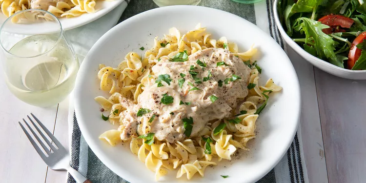

Slow Kooker Chicken Tetrazzini

Description
I serve this dish over homemade egg noodles. The chicken is so tender you will not need a knife...SOoooooGood!
Ingredients
- 6 skinless, boneless chicken breast halves
- 2 tablespoons melted butter
- 1 (.7 ounce) package dry Italian-style salad dressing mix
- 2 tablespoons butter
- 1 small onion, sliced and separated into rings
- 3 cloves garlic, minced
- 1 (10.75 ounce) can condensed cream of chicken soup
- ½ cup chicken broth
- 1 (8 ounce) package cream cheese, softened
Description
Step 1
- Place chicken in the slow cooker crock. Top with 2 tablespoons melted butter; sprinkle with Italian dressing mix.
Step 2
- Cover, and cook on High for 3 hours.
Step 3
- Heat the remaining 2 tablespoons of butter in a large skillet over medium heat. Stir in onion and garlic; cook and stir until onion is soft, about 5 minutes. Mix in the cream of chicken soup, chicken broth, and cream cheese. Pour mixture over the cooked chicken in the slow cooker.
Step 4
- Cover, and continue to cook on Low until chicken in fork tender and the sauce has thickened, about 1 additional hour.